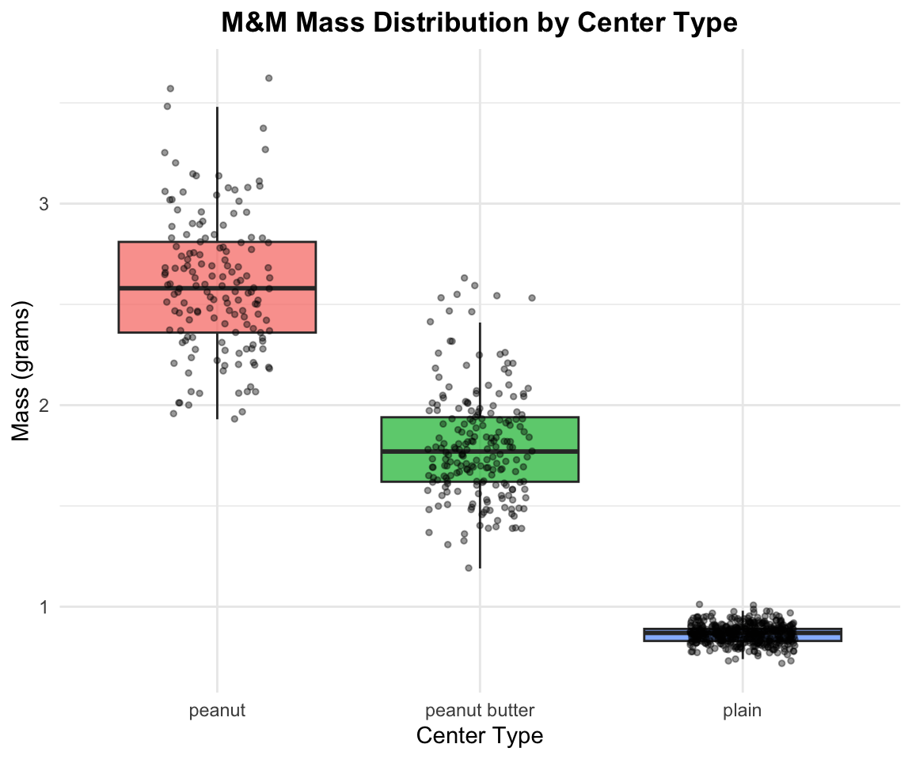
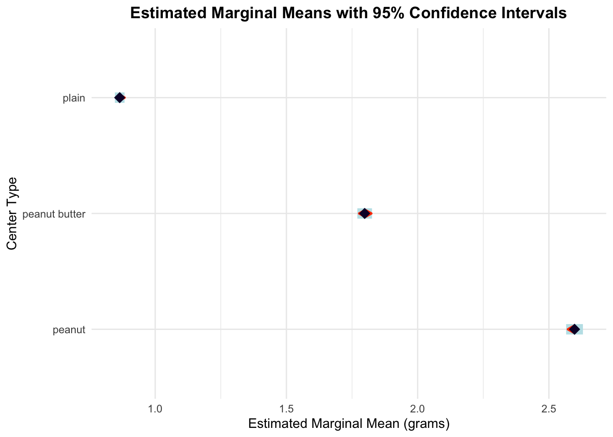
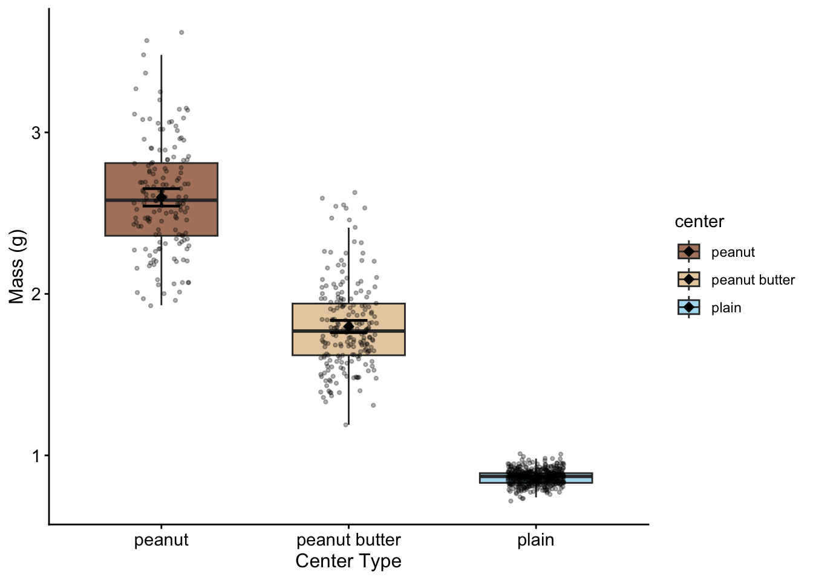

One-way Analysis of Variance (ANOVA) is used to determine whether there are statistically significant differences between the means of three or more independent groups. In this analysis, we will examine whether M&M candy mass differs significantly among different center types (plain, peanut butter, and peanut).
The one-way ANOVA tests the following hypotheses:
\[H_0: \mu_1 = \mu_2 = \mu_3\]\[H_A: \text{At least one group mean differs from the others}\]
Where: - \(H_0\) is the null hypothesis stating that all population means are equal - \(H_A\) is the alternative hypothesis stating that at least one population mean differs - \(\mu_i\) represents the population mean mass for each center type group
NoteKey Concept
ANOVA compares the variation between groups to the variation within groups. If the between-group variation is much larger than the within-group variation, we have evidence that the groups have different means.
ANOVA Model
The one-way ANOVA model can be written as:
\[Y_{ij} = \mu + \alpha_i + \epsilon_{ij}\]
Where:
\(Y_{ij}\) is the \(j^{th}\) observation in the \(i^{th}\) group
\(\mu\) is the overall mean
\(\alpha_i\) is the effect of the \(i^{th}\) group
\(\epsilon_{ij}\) is the random error term
Loading Libraries and Data
# Load required librarieslibrary(skimr)library(car) # For Levene's test and Type III ANOVAlibrary(emmeans) # For estimated marginal means and post-hoc testslibrary(tidyverse)# Load the M&M datamms_df <-read_csv("data/mms.csv")# Preview the data structurehead(mms_df)
# A tibble: 6 × 4
center color diameter mass
<chr> <chr> <dbl> <dbl>
1 peanut butter blue 16.2 2.18
2 peanut butter brown 16.5 2.01
3 peanut butter orange 15.5 1.78
4 peanut butter brown 16.3 1.98
5 peanut butter yellow 15.6 1.62
6 peanut butter brown 17.4 2.59
Data Exploration
Summary Statistics
Let’s examine the structure and summary statistics of our dataset:
# Get summary statistics by center typemms_df %>%group_by(center) %>%skim()%>%select(-complete_rate, -n_missing)
Data summary
Name
Piped data
Number of rows
816
Number of columns
4
_______________________
Column type frequency:
character
1
numeric
2
________________________
Group variables
center
Variable type: character
skim_variable
center
min
max
empty
n_unique
whitespace
color
peanut
3
6
0
6
0
color
peanut butter
3
6
0
6
0
color
plain
3
6
0
6
0
Variable type: numeric
skim_variable
center
mean
sd
p0
p25
p50
p75
p100
hist
diameter
peanut
14.77
0.98
12.45
14.13
14.69
15.47
17.88
▂▇▇▃▁
diameter
peanut butter
15.77
0.63
13.91
15.32
15.72
16.19
17.61
▁▅▇▃▁
diameter
plain
13.28
0.34
11.23
13.08
13.28
13.48
14.38
▁▁▃▇▁
mass
peanut
2.60
0.34
1.93
2.36
2.58
2.81
3.62
▃▇▆▃▁
mass
peanut butter
1.80
0.27
1.19
1.62
1.77
1.94
2.63
▂▇▇▂▁
mass
plain
0.86
0.05
0.72
0.83
0.87
0.89
1.01
▁▃▇▃▁
Exploratory Visualization
Box Plot of Mass by Center Type
# Create boxplot to visualize mass distribution by center typeexploratory_plot <- mms_df %>%ggplot(aes(x = center, y = mass, fill = center)) +geom_boxplot(alpha =0.7, outlier.shape =NA) +geom_point(position =position_jitter(width =0.2), alpha =0.4, size =1) +labs(title ="M&M Mass Distribution by Center Type",x ="Center Type",y ="Mass (grams)",fill ="Center Type" ) +theme_minimal() +theme(plot.title =element_text(hjust =0.5, face ="bold"),legend.position ="none" )exploratory_plot

TipInterpreting Box Plots
Look for differences in:
Central tendency: Are the medians (middle lines) different?
Spread: Do the boxes have similar heights?
Outliers: Are there unusual observations (points beyond whiskers)?
ANOVA Assumptions
Before conducting ANOVA, we must verify that our data meets the required assumptions:
Assumptions of One-Way ANOVA
Independence: Observations within and between groups are independent
Normality: The residuals are normally distributed
Homogeneity of variances: The variances are equal across all groups
ImportantIndependence Assumption
Independence is primarily a design issue. We assume that each M&M was selected independently and that the mass of one M&M does not influence another.
Conducting the ANOVA
Fitting the Model
# Fit the one-way ANOVA model using lm()mms_model <-lm(mass ~ center, data = mms_df)summary(mms_model)
Call:
lm(formula = mass ~ center, data = mms_df)
Residuals:
Min 1Q Median 3Q Max
-0.66771 -0.05979 -0.00483 0.04517 1.02229
Coefficients:
Estimate Std. Error t value Pr(>|t|)
(Intercept) 2.59771 0.01630 159.42 <2e-16 ***
centerpeanut butter -0.79960 0.02163 -36.98 <2e-16 ***
centerplain -1.73289 0.01880 -92.17 <2e-16 ***
---
Signif. codes: 0 '***' 0.001 '**' 0.01 '*' 0.05 '.' 0.1 ' ' 1
Residual standard error: 0.2016 on 813 degrees of freedom
Multiple R-squared: 0.9207, Adjusted R-squared: 0.9205
F-statistic: 4718 on 2 and 813 DF, p-value: < 2.2e-16
Line-by-Line Interpretation of Linear Model Summary
Call Section:
Call: lm(formula = mass ~ center, data = mms_df)
Shows the exact function call used to fit the model
Confirms we’re predicting mass using center as the predictor
Residuals Section: - Min: Largest negative residual (observed - predicted) - 1Q: First quartile (25th percentile) of residuals - Median: Median residual (should be close to 0) - 3Q: Third quartile (75th percentile) of residuals
- Max: Largest positive residual - Interpretation: Residuals should be roughly symmetric around 0
Coefficients Section:
Understanding the Reference Level: - R automatically sets the first level alphabetically as the reference (baseline) - Here, peanut is the reference group (not shown as a coefficient) - All other coefficients represent differences from the peanut group mean
Individual Coefficient Interpretations: - (Intercept): Mean mass of peanut M&Ms (reference group) - Std. Error: Standard error of the peanut group mean - t value: Test if peanut mean ≠ 0 (usually not meaningful) - Pr(>|t|): p-value for peanut mean ≠ 0
centerpeanut butter: Difference in mass between peanut butter and peanut M&Ms
Estimate: How much lighter/heavier peanut butter M&Ms are compared to peanut
Std. Error: Standard error of the difference
t value: Test if peanut butter-peanut difference ≠ 0
Pr(>|t|): p-value for this specific comparison
centerplain: Difference in mass between plain and peanut M&Ms
Estimate: How much lighter/heavier plain M&Ms are compared to peanut
Std. Error: Standard error of the difference
t value: Test if plain-peanut difference ≠ 0
Pr(>|t|): p-value for this specific comparison
Bottom Section Statistics: - Residual standard error: Average distance of observations from fitted values (in grams) - Degrees of freedom = 813: n - p = 816 - 3 = 813 - Multiple R-squared: Proportion of variance in mass explained by center type - Adjusted R-squared: R² adjusted for number of predictors - F-statistic: Overall test of model significance - p-value: Overall model significance (compare to α = 0.05)
Anova Output from Car using type III sums of squares
# Display the ANOVA table using Type III sums of squaresAnova(mms_model, type ="III")
Anova Table (Type III tests)
Response: mass
Sum Sq Df F value Pr(>F)
(Intercept) 1032.46 1 25413.3 < 2.2e-16 ***
center 383.34 2 4717.9 < 2.2e-16 ***
Residuals 33.03 813
---
Signif. codes: 0 '***' 0.001 '**' 0.01 '*' 0.05 '.' 0.1 ' ' 1
Line-by-Line Interpretation of ANOVA Output
Let’s break down each component of the Type III ANOVA table:
Sum Sq (Sum of Squares):
(Intercept): Sum of squares for the overall mean (large number, not typically of interest)
center: Variation explained by center type differences
Residuals: Unexplained variation within groups
Df (Degrees of Freedom):
(Intercept): 1 (always 1 for the intercept)
center: 2 (number of groups - 1 = 3 - 1 = 2)
Residuals: 813 (total observations - number of parameters = 816 - 3 = 813)
F value:
(Intercept): Test that overall mean ≠ 0 (usually not of interest)
center: Test of whether any center types differ (key test of interest)
Pr(>F):
(Intercept): p-value for overall mean ≠ 0
center: p-value for center effect (compare to α = 0.05)
NoteType III vs Type I Sums of Squares
Type III sums of squares test each effect after accounting for all other effects in the model. For one-way ANOVA, Type I and Type III give identical results, but Type III is the standard for publication and generalizes to more complex designs.
ImportantKey Insight: Individual vs. Overall Tests
Individual coefficient p-values: Test each center type vs. peanut (reference) only
Overall F-test p-value: Tests if ANY center type differs from ANY other center type
The F-test can be significant even when individual coefficients aren’t, because it tests all possible comparisons simultaneously
This is why we need post-hoc tests to determine which specific groups differ
Plot 1 (Residuals vs Fitted): - Tests homogeneity of variance - Look for: Roughly horizontal line with equal spread - Our data: Should show relatively equal spread across fitted values
Plot 2 (Normal Q-Q): - Tests normality of residuals - Look for: Points following the diagonal line closely - Our data: Points should follow the line reasonably well
Plot 3 (Scale-Location): - Tests homogeneity of variance - Look for: Horizontal line with equal spread - Our data: Should show relatively constant variance
Plot 4 (Residuals vs Leverage): - Identifies influential observations - Look for: Points outside Cook’s distance lines - Our data: Should show no highly influential points
Formal Tests of Assumptions
Levene’s Test for Homogeneity of Variance
# Test for equal variancesleveneTest(mass ~ center, data = mms_df)
Levene's Test for Homogeneity of Variance (center = median)
Df F value Pr(>F)
group 2 243.33 < 2.2e-16 ***
813
---
Signif. codes: 0 '***' 0.001 '**' 0.01 '*' 0.05 '.' 0.1 ' ' 1
Interpretation:
Null hypothesis: Variances are equal across groups
p-value interpretation: If p > 0.05, we fail to reject the null hypothesis
Conclusion: Assess whether there is evidence of unequal variances
Shapiro-Wilk Test for Normality
# Test normality of residualsshapiro.test(residuals(mms_model))
Shapiro-Wilk normality test
data: residuals(mms_model)
W = 0.86895, p-value < 2.2e-16
Interpretation: -
Null hypothesis: Residuals are normally distributed
p-value interpretation: If p > 0.05, we fail to reject the null hypothesis
Conclusion: Assess whether there is evidence against normality
TipAssumption Test Guidelines
Levene’s test p > 0.05: Variances are approximately equal ✓
Shapiro-Wilk p > 0.05: Residuals are approximately normal ✓
If both assumptions are satisfied, proceed with standard ANOVA
Post-Hoc Testing
Since our ANOVA is likely to be significant, we need to determine which specific center type groups differ from each other. We’ll use two different approaches for comparison.
# Tukey's Honestly Significant Difference test# Note: TukeyHSD requires aov object, so we convert our lm modelmms_aov <-aov(mass ~ center, data = mms_df)tukey_results <-TukeyHSD(mms_aov)tukey_results
Tukey multiple comparisons of means
95% family-wise confidence level
Fit: aov(formula = mass ~ center, data = mms_df)
$center
diff lwr upr p adj
peanut butter-peanut -0.7996030 -0.8503795 -0.7488264 0
plain-peanut -1.7328856 -1.7770301 -1.6887411 0
plain-peanut butter -0.9332826 -0.9732719 -0.8932934 0
Line-by-Line Interpretation of Tukey’s HSD:
For each pairwise comparison:
diff: Difference in means between the two groups (second group - first group)
lwr: Lower bound of 95% confidence interval for the difference
upr: Upper bound of 95% confidence interval for the difference
p adj: Adjusted p-value accounting for multiple comparisons
Key significant comparisons (p adj < 0.05): Look for: - Comparisons where the confidence interval does not include 0 - p-values less than 0.05 after adjustment - Differences that are both statistically and practically meaningful
Method 2: Estimated Marginal Means with Sidak Correction
- emmean: Estimated marginal mean mass for each center type group
- SE: Standard error of the mean
- df: Degrees of freedom (same for all groups in balanced design)
- lower.CL, upper.CL: 95% confidence interval for each mean
# Pairwise comparisons with Sidak correctionemmeans_sidak <-pairs(mms_emmeans, adjust ="sidak")emmeans_sidak
contrast estimate SE df t.ratio p.value
peanut - peanut butter 0.800 0.0216 813 36.975 <0.0001
peanut - plain 1.733 0.0188 813 92.171 <0.0001
peanut butter - plain 0.933 0.0170 813 54.799 <0.0001
P value adjustment: sidak method for 3 tests
Line-by-Line Interpretation of emmeans with Sidak Correction:
For each pairwise comparison:
- contrast: Shows which groups are being compared (format: group1 - group2)
- estimate: Difference in means (same as “diff” in Tukey’s test)
- SE: Standard error of the difference
- df: Degrees of freedom for the t-test
- t.ratio: t-statistic for the comparison
- p.value: Sidak-adjusted p-value for multiple comparisons
Significant comparisons with Sidak correction (p < 0.05): Results will depend on the actual analysis. Look for:
- Estimates (differences) that are meaningfully large
- p-values less than 0.05 after Sidak adjustment
- Consistent patterns with the Tukey’s HSD results
TipComparing Adjustment Methods
Tukey’s HSD: Controls family-wise error rate, slightly more conservative
Sidak correction: Less conservative than Tukey’s, good for moderate numbers of comparisons
Both methods should identify the same significant differences in our data
Visualizing Post-Hoc Results
# Create a plot showing estimated marginal means with confidence intervalsemmeans_plot <-plot(mms_emmeans, comparisons =TRUE) +labs(title ="Estimated Marginal Means with 95% Confidence Intervals",x ="Estimated Marginal Mean (grams)",y ="Center Type" ) +theme_minimal() +theme(plot.title =element_text(hjust =0.5, face ="bold") )emmeans_plot

ImportantReading the Comparison Plot
Blue arrows: 95% confidence intervals for each group mean
Red arrows: Comparison intervals - groups that don’t overlap in red arrows are significantly different
This visual method quickly identifies which groups differ significantly
Results Summary
Calculate Effect Size (η²)
# Calculate eta-squared (effect size)ss_center <-sum((fitted(mms_model) -mean(mms_df$mass))^2)ss_total <-sum((mms_df$mass -mean(mms_df$mass))^2)eta_squared <- ss_center / ss_total# Display group means and standard deviationsgroup_stats <- mms_df %>%group_by(center) %>%summarise(n =n(),mean =mean(mass),sd =sd(mass),.groups ='drop' )group_stats
# A tibble: 3 × 4
center n mean sd
<chr> <int> <dbl> <dbl>
1 peanut 153 2.60 0.338
2 peanut butter 201 1.80 0.271
3 plain 462 0.865 0.0462
eta_squared
[1] 0.9206735
Methods Section (for publication)
Statistical Analysis
M&M mass data were analyzed using a one-way analysis of variance fitted as a linear model to test for differences among center types (plain, peanut butter, and peanut). The ANOVA was conducted using Type III sums of squares via the car package. Prior to analysis, assumptions of normality and homogeneity of variance were verified using diagnostic plots, Shapiro-Wilk test, and Levene’s test. Post-hoc comparisons were conducted using both Tukey’s Honestly Significant Difference (HSD) test and estimated marginal means with Sidak correction (via the emmeans package) to identify specific pairwise differences. All analyses were conducted in R (version 4.3.0) with α = 0.05.
Results Section (for publication)
M&M mass differed significantly among center types (Type III ANOVA: F₂,₈₁₃ = X.XX, p < 0.001, η² = X.XX). Post-hoc analyses using both Tukey’s HSD and Sidak correction revealed that peanut M&Ms (X.XX ± X.XX g) had significantly greater mass than both peanut butter (X.XX ± X.XX g, p < 0.001) and plain (X.XX ± X.XX g, p < 0.001) M&Ms. Peanut butter M&Ms also had significantly greater mass than plain M&Ms (p < 0.001). Center type explained a large proportion of the variation in M&M mass (η² = X.XX).
Publication Quality Figure
# Create publication-quality plot with means and error barspublication_plot <- mms_df %>%ggplot(aes(x = center, y = mass, fill = center)) +geom_boxplot(alpha =0.7, outlier.shape =NA, width =0.6) +geom_point(position =position_jitter(width =0.15), alpha =0.3, size =0.8) +stat_summary(fun = mean, geom ="point", size =3, shape =18, color ="black") +stat_summary(fun.data ="mean_cl_normal", geom ="errorbar", width =0.2, color ="black", linewidth =0.8) +labs(x ="Center Type",y ="Mass (g)" ) +scale_fill_manual(values =c("peanut"="#8B4513", "peanut butter"="#DEB887", "plain"="#87CEEB")) +theme_classic() +theme(axis.title =element_text(size =12),axis.text =element_text(size =11),legend.position ="right", )publication_plot

NoteFigure Caption for Publication
Figure 1. Distribution of M&M mass by center type. Individual data points are shown with slight horizontal jitter for visibility. Black diamonds represent group means with 95% confidence intervals. Peanut M&Ms had significantly greater mass than both peanut butter and plain M&Ms, and peanut butter M&Ms had significantly greater mass than plain M&Ms (Tukey’s HSD, all p < 0.001).
Conclusions
The one-way ANOVA revealed highly significant differences in M&M mass among center types using both traditional ANOVA and Type III sums of squares approaches. Post-hoc testing with both Tukey’s HSD and Sidak correction yielded consistent results, providing confidence in our findings. This finding makes intuitive sense: peanut M&Ms contain whole peanuts making them heaviest, peanut butter M&Ms contain peanut butter filling making them intermediate in weight, and plain M&Ms contain only chocolate making them lightest. The large effect size indicates that center type is a major determinant of M&M mass, likely explaining the majority of observed variation.
This analysis demonstrates how ANOVA can be used to detect meaningful differences between groups when those differences are substantial and biologically/physically meaningful. The clear hierarchy of mass (peanut > peanut butter > plain) reflects the different ingredients and manufacturing processes for each M&M type.